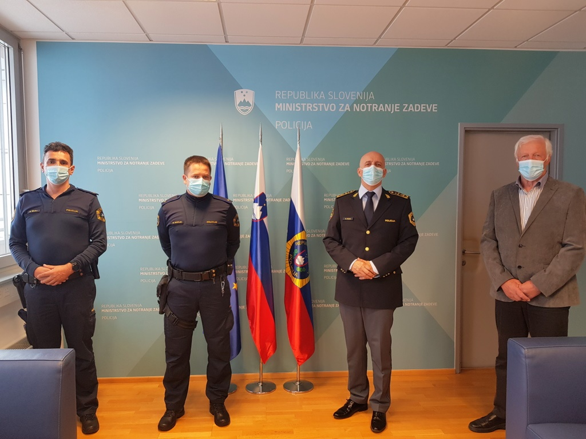

Generalni direktor policije dr. Anton Olaj je danes, 6. aprila 2021, sprejel policista Policijske postaje Bled Blaža Svetlina in Romana Šaleja ter občana Miloša Janšo, ki so iz jezera rešili utapljajočo se žensko. Spomnimo: 12. marca 2021 nekaj po 10. uri smo bili v Policiji obveščeni, da je v jezero padla ženska in da se komaj drži nad vodo. V nekaj minutah sta bila na kraju policista Policijske postaje Bled Blaž Svetlin in Roman Šalej. Ob njunem prihodu se je ženska držala za veje drevesa in se tako skušala držati nad vodno gladino, a so ji moči popuščale in obstajala je nevarnost, da potone pod vodno gladino. Svetlin se je zapodil v mrzlo jezero, priplaval do ženske in jo s prijemom pod ramenom zadrževal nad gladino vode. Šalej pa je z vpitjem na kraj dogodka priklical motorni čoln Veslaškega kluba Bled, ki je bil takrat v bližini. Žensko sta Svetlin in voditelj čolna Janša dvignila iz vode in jo namestila v čoln, pri iznosu z jezera na obalo pa je pomagal še gasilec Prostovoljnega gasilskega društva Bled. Prvo pomoč so ji nudili reševalci Reševalne postaje Zdravstvenega doma Bled. Sprejemu sta prisostvovala komandir Policijske postaja Bled Boštjan Lenček in direktorica Policijske uprave Kranj Melita Močnik.
